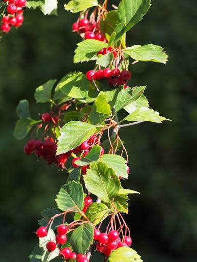
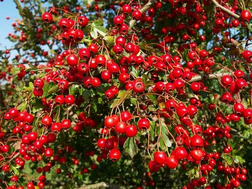
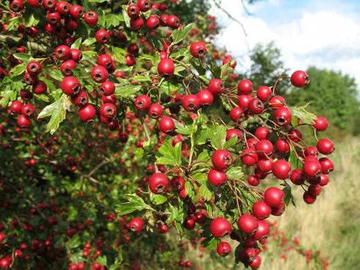
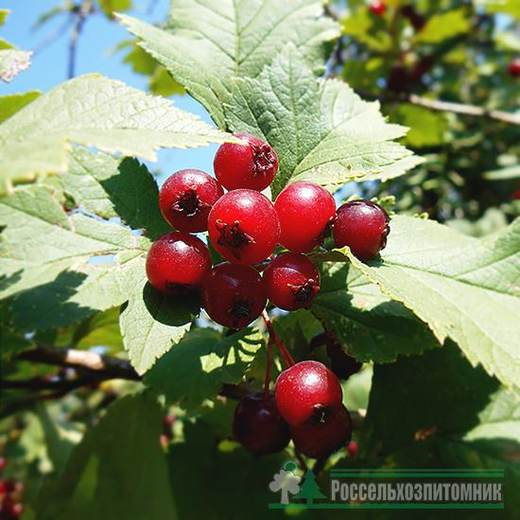

Колючий долгожитель у начала сада: медонос, аптека и убежище для птиц в одном растении.




Клик по фото — полный размер. Фотографии иллюстрируют сорт/вид; собраны из открытых источников (питомники, сортовые каталоги, Википедия).
Боярышник — одно из самых выносливых растений сада: мирится с морозами, засухой, пылью, бедными почвами. Живёт столетиями. Цветёт в конце мая — начале июня, плоды (яблокообразные костянки) созревают в августе–сентябре.
Ценится втройне: как лекарственное растение (цветки и плоды — признанное сердечное средство), как медонос и как лучшая порода для непроходимой живой изгороди — колючки плюс густота после стрижки.
| Почва | любая садовая, лучше — плодородная с известью; не любит застоя воды |
| Посадка | весна или осень |
| Изгородь | однорядная посадка через 0,5–1 м, стрижка обязательна |
| Сбор цветков | в начале цветения, до раскрытия всех бутонов |
| Сбор плодов | сентябрь–октябрь, после полного созревания |
| Сушка плодов | при 40–60 °C, хранят до 2 лет |
Советы собраны из отзывов садоводов на форумах и из практики питомников; цитаты приведены по источникам ниже.